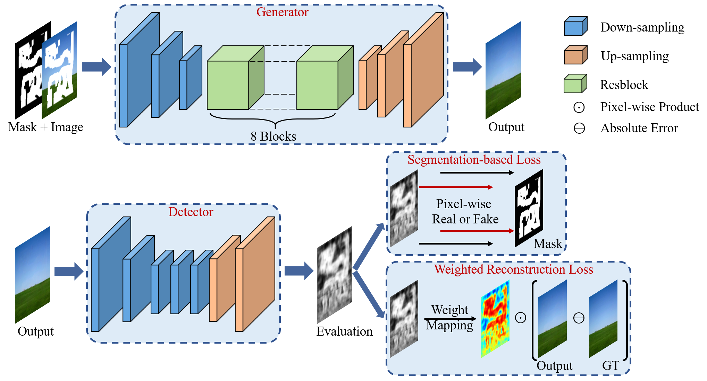
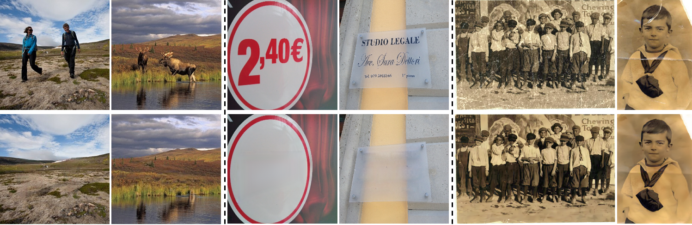

|
Pixel-wise Dense Detector for Image Inpainting
|
|
Ruisong Zhang 1,2
Weize Quan 1,2
Baoyuan Wu 3,4
Zhifeng Li 5
Dong-Ming Yan 1,2
1 National Laboratory of Pattern Recognition, Institute of Automation, Chinese Academy of Sciences 2 School of Artificial Intelligence, University of Chinese Academy of Sciences 3 School of Data Science, the Chinese University of Hong Kong 4 Secure Computing Lab of Big Data, Shenzhen Research Institute of Big Data 5 Tencent AI Lab |

Deep inpainting technique fills the semantically correct and visually plausible contents in the missing regions of corrupted images. All above results are presented by our proposed framework. |
Abstract
Detection-based Framework
|

Our proposed detection-based inpainting framework consists of a generative network to reconstruct corrupted images and a detective network to evaluate outputs of the generator. The generator follows an encoder-decoder architecture with eight residual blocks for extracting multi-scale semantic feature to restore corrupted images. The detector is a seven-layer fully convolutional network, which is augmented by in-network up-sampling and pixel-wise loss for dense evaluation of the inpainted image. The generator and detector are trained by the weighted reconstruction loss and segmentation-based loss, respectively. |
Experimental Results

Above figure is qualitative comparison about visual inpainting details with previous approaches, including PConv, PEN, and GConv. The From top to bottom splited three groups from CelebA-HQ, Places2 and Paris StreetView dataset, respectively. |
|

Some daily applications of our inpainting framework on image translation includes object removal (the left column), text removal (the middle column) and old photo restoration (the right column). For each pair of images, the top image is the input and the bottom image is the image translation result. |
Bibtex
Download
|
Paper [PDF] Code [Github] |